Papers Summary
对比学习论文总结
学习视频：
| 阶段 | 代表工作 | ||||
|---|---|---|---|---|---|
| 百花齐放（18-19中） | Inst Disc: memory Bank, 每张图都是一个类别（个体判别） | Inva Spread: end-to-end, 在同一mini-batch中选正负样本 | CPC V1：用预测未来的代理任务做对比学习 | CMC：增大同一物体不同视角的互信息 | Deep cluster |
| CV双雄（19-20中） | MoCo V1: queue + momentum encoder | SimCLR V1: MLP(projection head) + 数据增强 | CPC V2 | Infomin | |
| 不用负样本 | MoCo V2: V1 + MLP + aug + 增大epoch | SimCLR V2: large, 2层MLP, momentum encoder | Swav: multi-crop, 图片一个视角预测另一个视角，和聚类中心比 | ||
| Transformer | MoCo V3: V2 + SimSiam | BYOL(匹配->预测) =》BN Blog =》BYOL V2 BYOL =》Sim Siam(stop gradient) =》DINO |
|||
CLIP改进论文总结
学习视频：
| 领域 | 代表工作 |
|---|---|
| 语义分割 | Lseg: Language Driven Semantic Segnatation: zero-shot CLIP, dense feature, image encoder: DPT (ViT + decoder), supervise learning(依赖mask手工标注)目标函数非对比学习 |
| GroupVit: Semantic Segmentation Energes from Text Supervision: ViT + group block + group tokens(hpy聚类中心) | |
| 目标检测 | Open-Vocabulary ViLD: CLIP的预训练image encoder作为teacher学习image embedding对比 |
| GLIP：Grounded Language-Image Pre-traing: 伪标签， phrase grounding | |
| 图形学 | CLIPasso: saliency initial, semantic loss + geometric loss |
| 视频 | 图文检索 CLIP4Clip: 时序图像文本融合：mean pooling效果最好; Transformer/LSTM; early fusion(tight)效果差 |
| 动作识别 ActionCLIP：temporal shift module | |
| 图像文本 | CLIP-ViL 用回图像文本下游任务 |
| 语音 | AudioCLIP |
| 三维 | PointCLIP depthCLIP |
| CLIP改进工作可以总结为三类： 1. 直接使用CLIP预训练模型得到更好的特征和现有框架得到特征进行融合(改动最小) 2. CLIP当做teacher，将其训练得到的特征用来蒸馏，加速现有模型训练(中间) 3. 借鉴多模态对比学习思想，定义自己任务的正负样本计算对比loss，实现zero-shot |
|
视频理解论文总结
学习视频：
传统手工特征方法：
(image) SIFT -> (Video) STIP -> (光流) DT/IDT -> (全局特征) IDT + FV
深度学习方法：
| 方法 | 代表工作 | |
|---|---|---|
| CNN | DeepVideo(CVPR2014): Sports 1M Datasets, 失败的尝试 | |
| Two-Stream | Two-Stream(nureons2014): Spatial stream + Temporal stream late fusion | |
| TDD(CVPR2015): 手工IDT+沿轨迹堆叠光流 | ||
| Beyond Short Snippet(CVPR2015): 使用LSTM增强特征，实际上最后一层+LSTM没那么有用（帧短抽到的特征差不多） | ||
| Conv Two-Stream(CVPR2016): early fusion, Spatial fusion(max/concat/stack Conv(效果最好)/sum/bilinear), Temporal fusion(3D Pooling/3D Conv + 3D Pooling) | ||
| 王利民TSN(ECCV2016): 长时间视频理解, 给视频分段后结果求共识 tips1: 使用ImageNet预训练光流, 复制参数为目标channel来初始化 tips2: partial BN, 第一层使用BN, 其余层freeze BN tips3: 数据增强, conner cropping = scale jittering |
||
| TSN+全局建模 | ||
| DOVF(CVPR2017): face rencting encoding | ||
| TLE(CVPR2017): end-to-end, bi-linearing encoding | ||
| ActionVLAN: VLAN | ||
| 3D Conv | C3D(ICCV2015): 3D版VGG, 网络深, 提供一个好特征可以做下游任务 | |
| I3D(CVPR2017): 利用2D预训练模型, 同时使用光流刷爆UCF101, 证明2D向3D迁移的有效性 | ||
| Non-local NN: 使用plug and play(即插即用)的non-local block(self-attention)长时间建模，验证了多block效果更好/td> | ||
| R(2+1)D(CVPR2018): 3D拆成空间2D+时间1D(二者利用特征投射融合), 训练简单效果好 | ||
| SlowFast: Slow(标准I3D)少帧小输入大网络 + Fast多帧大输入小网络 later connection, Fast时间维度不下采样 | ||
| Hidden Two-Stream: 将光流学习融入网络，不需要抽光流 | ||
| TSM(ICCV2019): shift 2D网络 | ||
| 总结: 由于抽光流耗时且占内存，兴起了3D Conv, 从C3D到I3D, 之后的演变主要为四方面: 1. 改进2D网络: R3D, MFNet, STC 2. 2D结合3D：S3D, R(2+1)D, ECO, D3D 3. 长时序处理：LTC, T3D, non-local, V4D 4. 高效率：CSN, SlowFast, X3D |
||
| Vision Transformer | Timesformer: Space-Time Attention降低复杂度: Divided ST A; Sparse Local Global A; Axial A(T+W+H) | |
| ViViT, VidTr, MViT... | ||
多模态论文总结
学习视频：
| 方法 | 代表工作 | |
|---|---|---|
| 多模态框架总结：其中图c的效果最好，即视觉模型要大于文本模型，Fusion模型也要大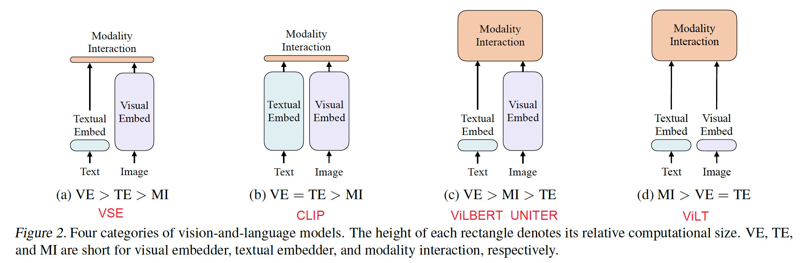 | ||
| encoder | ViLT：效率较高，使用whole word masking + image augmentations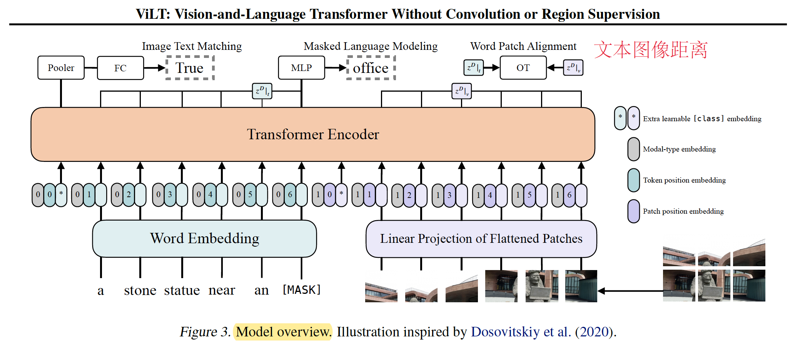 | |
| CLIP：4亿数据集，大力出奇迹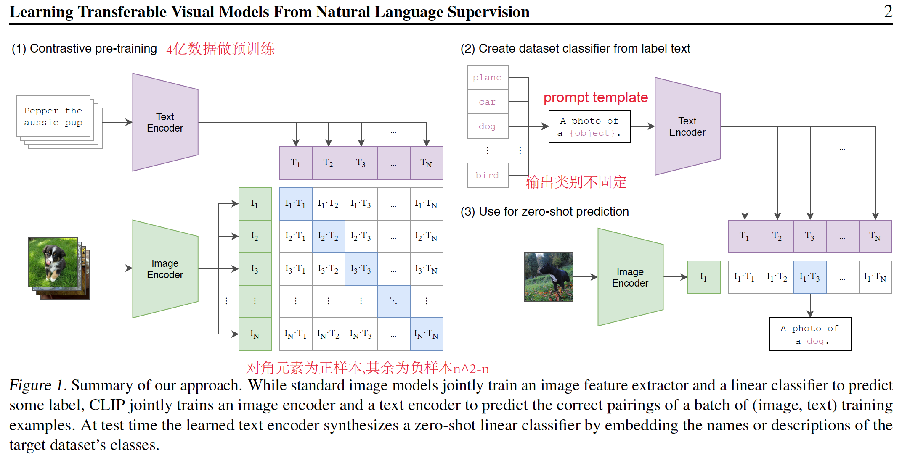 | ||
| ALBEF：Fuse前使用对比学习loss对齐图像和文本；使用动量蒸馏学习伪标签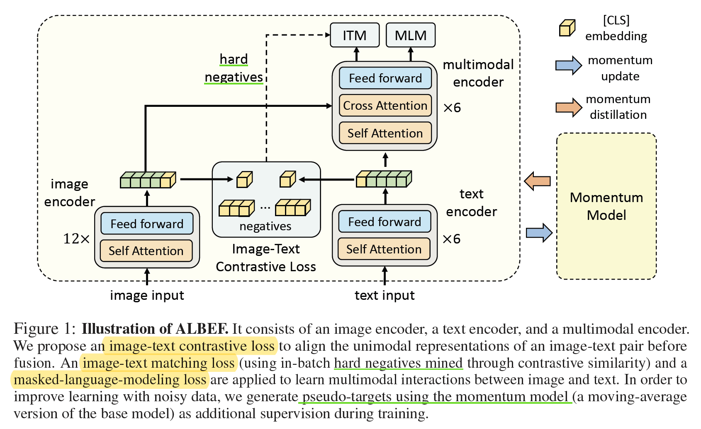 | ||
| VLMo：每个block共享自注意力层并包含一个modality-specific experts池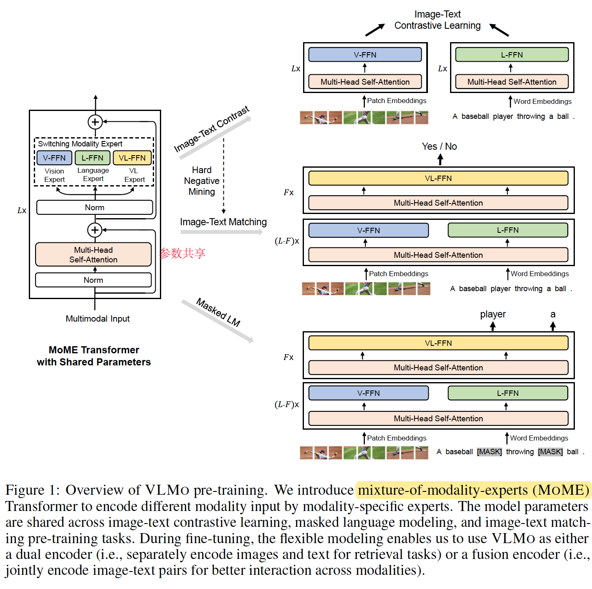 | ||
| encoder and decoder | BLIP：模型加入Decoder使得可以做生成任务；加入CapFilt处理noisy数据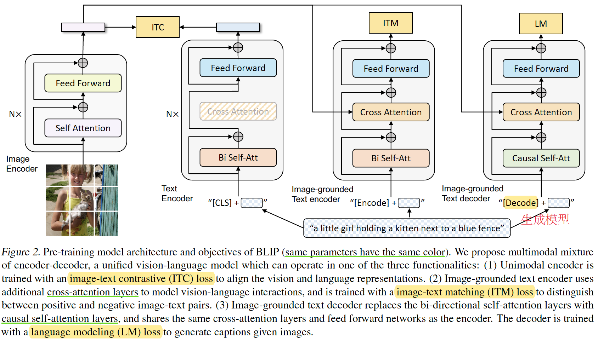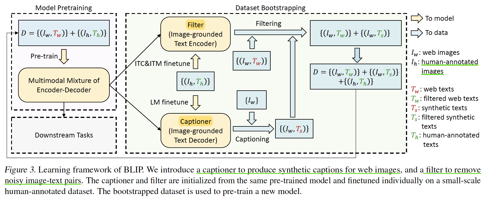 | |
| CoCa：结合contrastive和captioning objectives到一个encoder-decoder模型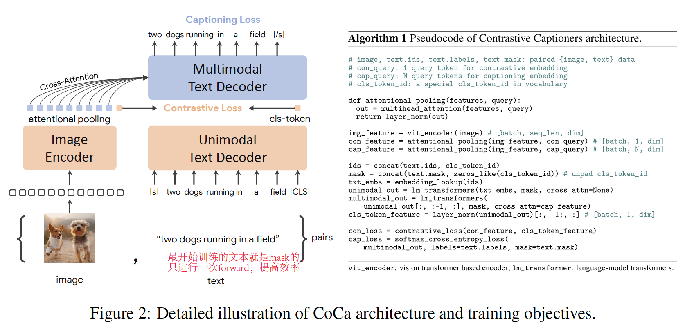 | ||
| BeiT V3：scale模型；mask图像处理为图像语言，结合masked text为平行句子；统一模型，更适合做多任务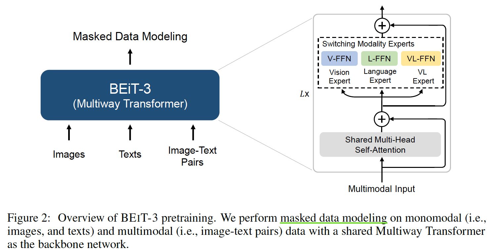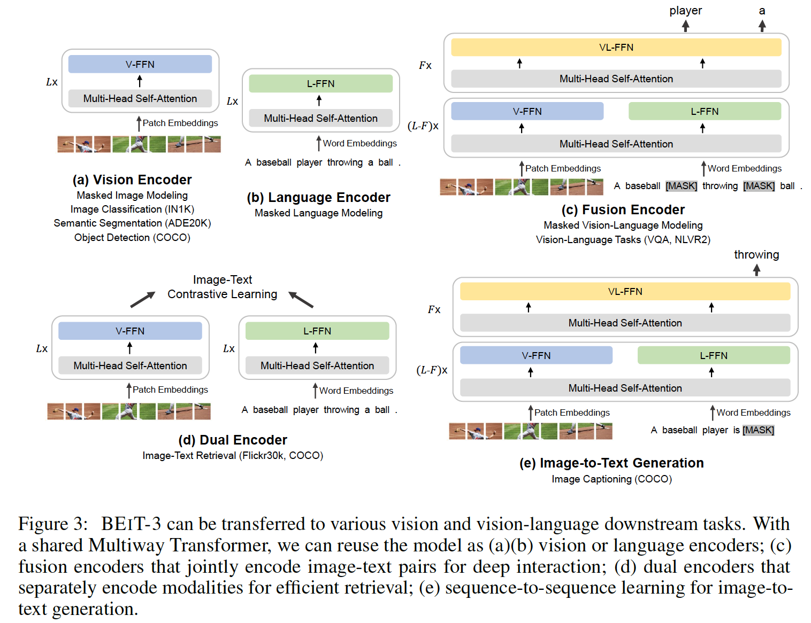 | ||
| 总结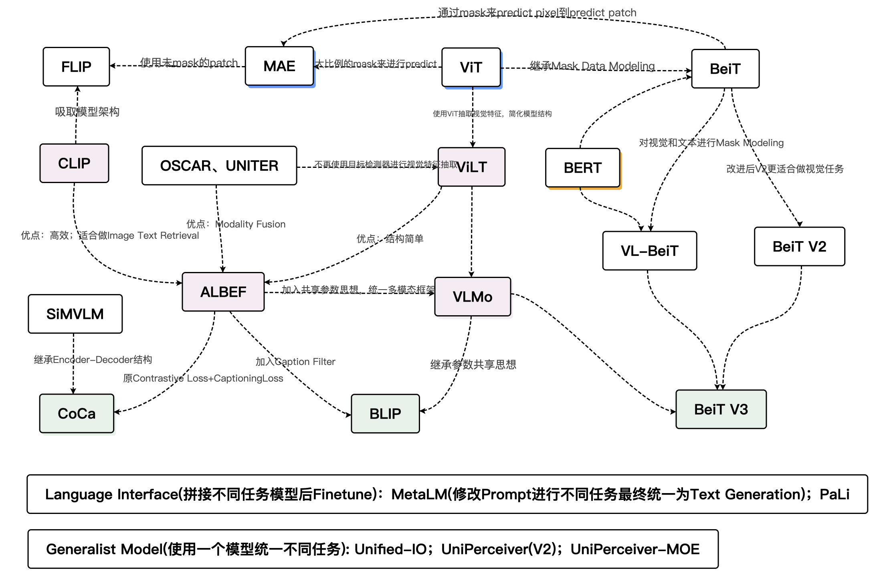 | ||
扩散模型综述
Diffusion Models: A Comprehensive Survey of Methods and Applications
- Arxiv
- 简介：扩散模型的综述：介绍三种基础公式DDPMs、SGMs、Score SDEs；从采样效率、最大似然和用特殊结构处理数据三方面优化扩散模型；扩散模型和其他生成模型的联系；多领域的应用
- 主要内容：
- 基础：深度生成模型的目标是为了学习X的分布$p(X)$，Denoising diffusion probabilistic models (DDPMs), Score-based generative models (SGMs)和Stochastic differential equations (Score SDEs)
的关键都是用随机噪声渐进式扰动数据然后再逐渐删除噪声生成新的数据。 - 优化：原始扩散模型的三个主要缺点，采样速度慢，最大化似然差、数据泛化能力弱。
- Discretization Optimization、Non-Markovian Process、Partial Sampling优化采样效率；
- 由于对数似然难以直接计算，最大化似然差的优化研究主要集中在优化和分析变分下界（VLB）；
- 扩散模型假设数据存在于欧几里得空间，即具有平面几何形状的流形，并添加高斯噪声将不可避免地将数据转换为连续状态空间。使用Feature Space Unification和Data-Dependent Transition Kernels优化将扩散模型推广到适用于其他数据类型的模型。
- 应用：计算机视觉、自然语言处理、波形信号处理、多模态学习、分子图生成、时间序列以及对抗学习等七大应用方向
- 未来方向：检验应用假设；理论理解指导；在隐空间更好的表示数据；更多泛化场景
- 基础：深度生成模型的目标是为了学习X的分布$p(X)$，Denoising diffusion probabilistic models (DDPMs), Score-based generative models (SGMs)和Stochastic differential equations (Score SDEs)
- 参考：「扩散模型」首篇综述+论文分类汇总，谷歌&北大最新研究

All articles in this blog are licensed under CC BY-NC-SA 4.0 unless stating additionally.
Related Articles


Comment